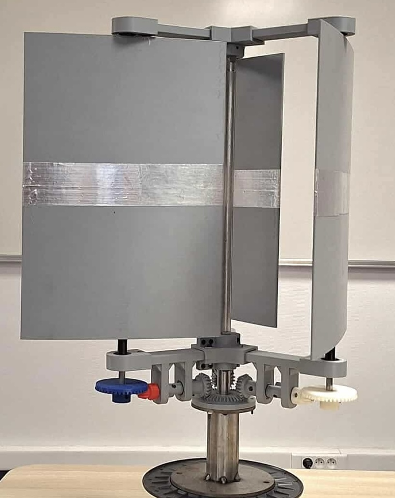
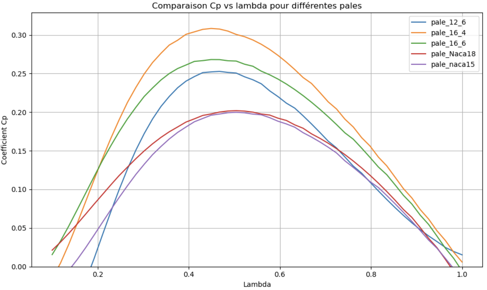
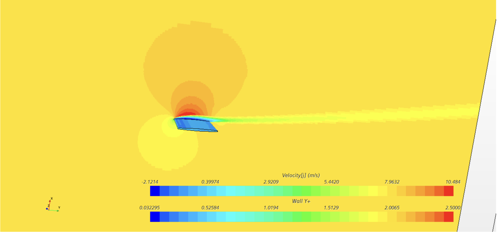
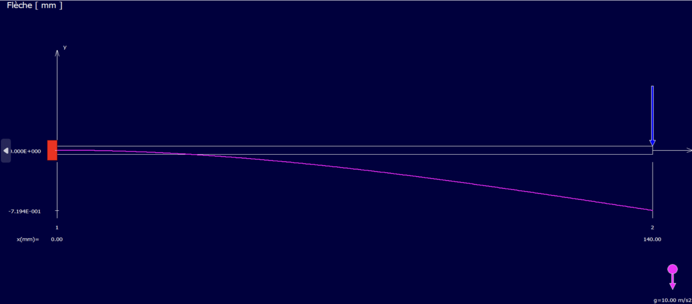
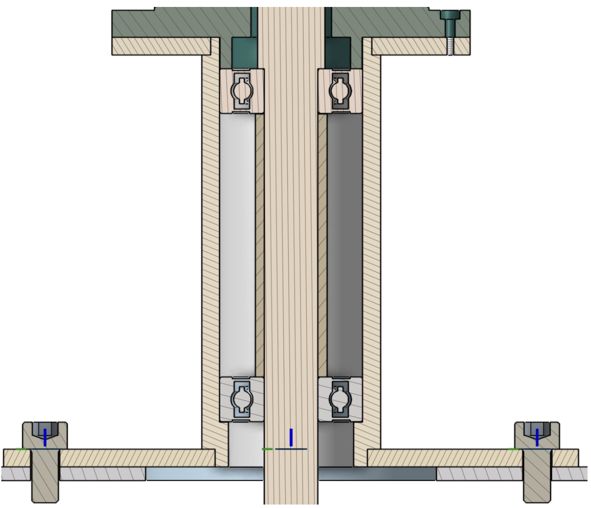
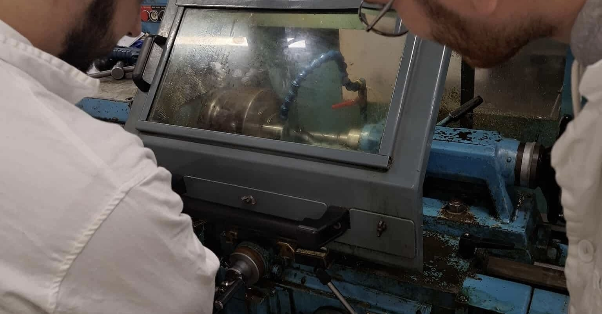

Conception et fabrication d'une éolienne tripale à axe vertical
Aperçu du projet
Dans le cadre de l'Electif d'Intégration Approche énergétique et transmission de puissance, ce projet mettait en concurrence 4 équipes de 8 étudiants avec pour but la réalisation d'une éolienne la plus puissante possible en respectant un cahier des charges défini.
L'objectif technique était de concevoir, modéliser, fabriquer et tester en soufflerie un prototype d'éolienne à axe vertical capable de fournir une puissance mécanique d'au moins 10 W pour une vitesse de vent nominale de 8 m/s.
La particularité de cette architecture réside dans sa cinématique. En effet, afin d'optimiser l'angle d'incidence, les trois pales de l'éolienne s'orientent continuellement face au vent et ne réalisent qu'un demi-tour lorsque l'éolienne en réalise un complet.

Démarche
1. Modélisation aérodynamique
Optimisation analytique du cycle (Python)
Afin de maximiser l'extraction d'énergie, le pôle aérodynamique a développé un modèle Python évaluant le coefficient de puissance Cp en fonction de l'angle d'incidence des pales, du facteur d'induction axiale et du ratio de vitesse spécifique.
- Choix cinématique : le modèle a démontré qu'une rotation des pales dans le sens inverse de l'axe central permettait de minimiser l'angle d'incidence et d'éviter un décrochage prématuré.
- Dimensionnement global : l'algorithme a permis d'isoler les paramètres optimaux du rotor : un rayon R=140 mm, une demi-envergure de pale b=120 mm, un facteur a=0.072 et un λopt=0.486.

Simulations numériques (STAR-CCM+)
Pour valider le profil des pales, plusieurs géométries (profils constants, profils NACA 15 et 18, profils affinés) ont été testées en CFD.
- Maillage : étude de convergence en maillage validée à 1,7 million de cellules, avec un y+ rigoureusement contrôlé pour capturer la couche limite.
- Résultats : le choix final s'est porté sur le profil "16_4" (épaisseur de 16 mm au centre s'affinant à 4 mm aux bords). Ce design offre un décrochage retardé à 11° et le meilleur rendement aérodynamique (Cp=0.31).

2. Conception mécanique et dimensionnement (CAO)
Calculs de Résistance des Matériaux (RDM)
Les bras de maintien des pales (section 10x30x140 mm en PLA) ont été dimensionnés pour résister aux différentes contraintes mécaniques en fonctionnement.
- Tenue en flexion : simulation sous RdM Le Mans avec une force verticale de 60 N vers le bas (représentant le poids majoré d'un ensemble pale/axe de 600 g).
- Efforts centrifuges : calcul analytique de la force radiale exercée par la pale en rotation nominale (F = mRΩ²/2 = 38,7 N) puis simulation sous RDM Le Mans
- Validation matière : la contrainte maximale relevée est de 0,06 MPa (pour une limite élastique du PLA à 50 MPa), validant l'absence de déformation plastique (taux de déformation de 4.10⁻⁴ %).

Architecture cinématique et Liaisons
La transmission du mouvement (rapport de réduction global de 1/2) est assurée par un train d'engrenages concourants imprimé en 3D (dents droites, roues de 10, 20 et 42 dents). La liaison encastrement sur les axes est réalisée par des vis de pression sur méplat avec inserts métalliques. Cette cinématique a été privilégiée aux courroies pour sa robustesse et l'absence de glissement.
- Axe principal : guidage par deux roulements à billes montés en "X" (entretoise centrale, écrou à encoches) avec un ajustement de précision H7/m6.
- Axes des pales (moyeu tournant) : guidage par roulements rigides à billes. Les bagues extérieures sont montées serrées dans les moyeux en PLA. Les bagues intérieures sont montées glissantes sur l'axe fixe, l'ensemble étant bloqué par une entretoise et des anneaux élastiques.

3. Industrialisation et prototypage
Le projet a été mené jusqu'à la fabrication physique complète en atelier, en croisant plusieurs procédés pour s'adapter aux différents matériaux :
- Tournage et Fraisage : usinage des axes principaux et des stubs de pales en acier (chariotage, rainurage pour circlips, dressage) et réalisation des méplats pour assurer le blocage en rotation des engrenages.
- Découpe Jet d'Eau : découpe de haute précision des disques en acier du bâti.
- Impression 3D : fabrication des bras profilés et des engrenages coniques en PLA.

4. Essais en soufflerie et vision système
Le prototype final a été couplé à une génératrice et testé en soufflerie pour confronter les modèles théoriques à la réalité physique de l'écoulement.
- Validation des profils : les essais en soufflerie (réalisés en amont de la phase de prototypage des pales) ont confirmé les simulations CFD, la pale "16_4" surpassant les autres profils en maintenant un Cp plus élevé sur une large plage de fonctionnement.
- Analyse des écarts : les pertes mécaniques (liées aux frottements des roulements et de l'engrènement) ont été modélisées et estimées entre 15 et 20 % de la puissance fluide captée.
- Performance finale : à la vitesse nominale, l'arbre délivre une puissance mécanique de 12,7 W, validant ainsi avec succès le cahier des charges initial imposant une puissance supérieure à 10 W.
Mon rôle
En tant que responsable des pôles conception et fabrication, j'ai activement participé à la réalisation de la maquette numérique, à la mise en plan, aux différentes étapes d'usinage et d'impression 3D ainsi qu'à l'assemblage final de l'éolienne.
Compétences mobilisées
Équipe du projet
Rapport du projet
Les slides de la soutenance finale, incluant la méthodologie détaillée, les choix techniques de conception et de fabrication, sont disponibles ci-dessous.
Télécharger le PDF